Cookie Engine is a scholar project which aims to create a Game Engine specialized for the creation of RTS Games, In addition we provide a simple standalone game to illustrate a possible usage and capabilities of our Engine.
The project has been compiled using the support of Visual Studio for CMake mainly with Ninja, and clang-cl on windows, we guarantee at least that it will compile using this method.
The CMakeSettings.json is available to compile, you can change the compiler and the generator if you do not want to use clang and Ninja, nor msvc and Ninja.
Assets for the Project are available in the Following Google Drive: https://drive.google.com/drive/folders/1MkweOgCSBc_fAu7KRT-KTbGxjArFwXry?usp=sharing ... the folder need to be put on the same folder of the executable.
After the compile succeeded the executable can be found in the build/ folder generated by CMake, the path can be changed in the CMakeSettings.json .
This part is the user manual of our engine, it will present to you the feature available and how to use our Engine to make your own game.
Once you run the editor, it should look like this:
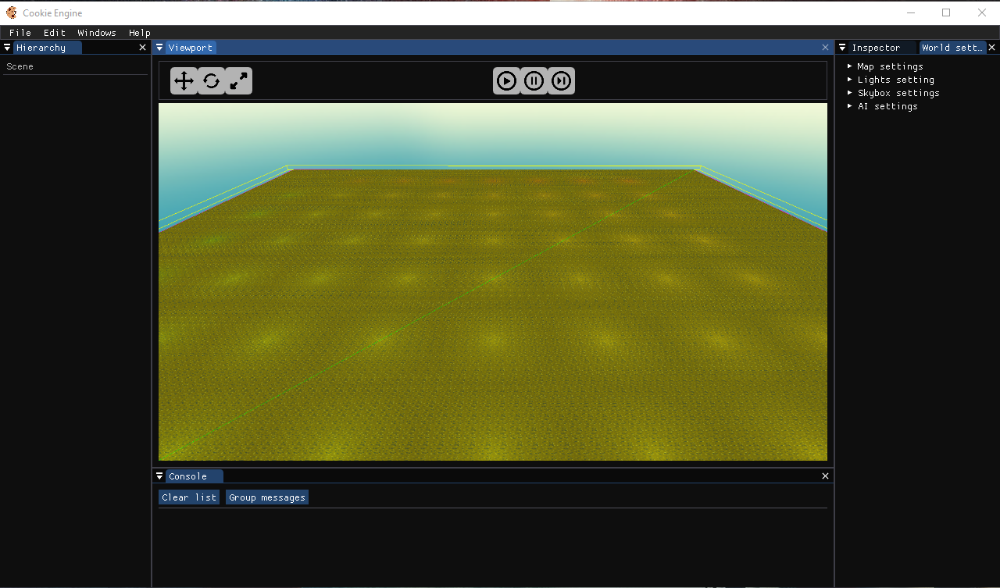
it might look like that when you open it for the first time:
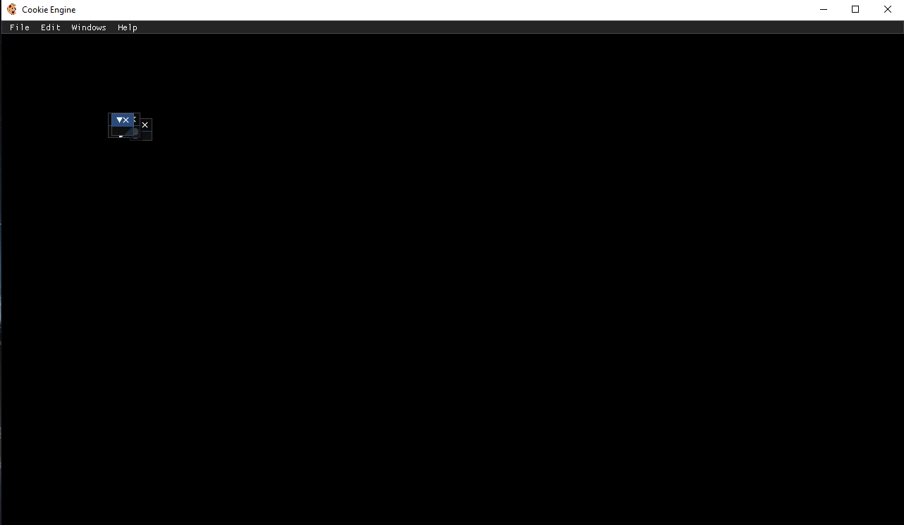
it is because the imgui.ini was not copied properly during compilation or that it is not near the executable but, do not worry, you can just expand them and put them such as shown below.
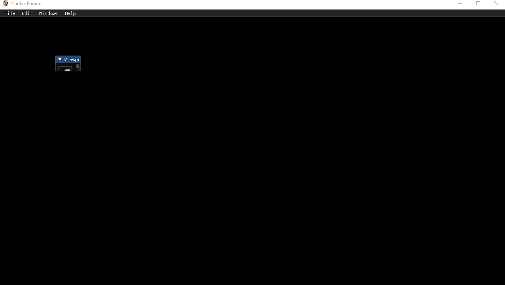
this is the example for the viewport but all widget can be expanded and placed to your desire. if you do not have the widget opened you can find them as shown below, in the Edit or Window options above.
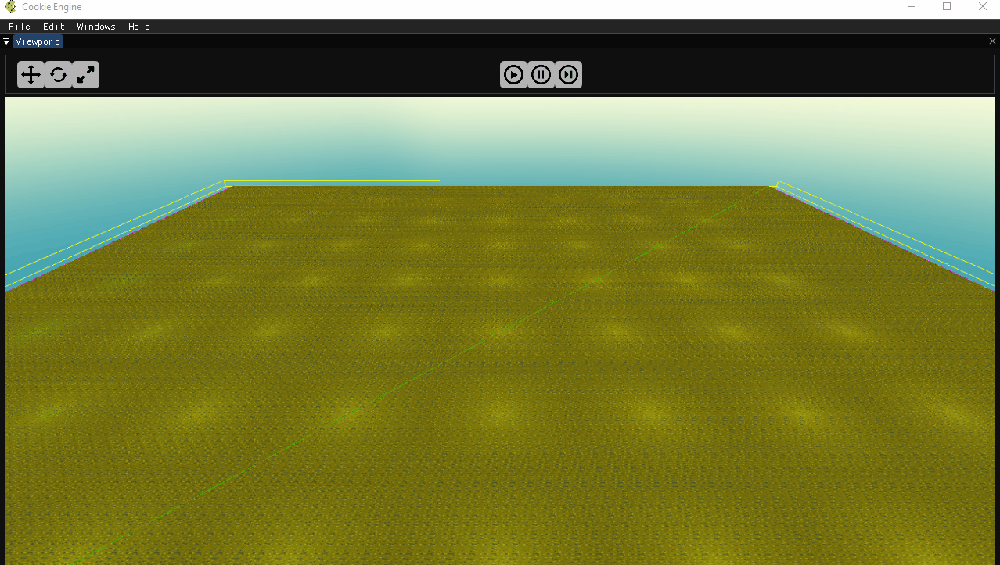
we will now see the different widget at your disposal:
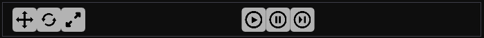
The buttons on the left allows you to change the things to change with the gizmos: starting from the right, translation, rotation, scale.
The buttons in the middle allows you to play the game, to pause it and to run it frame by frame.
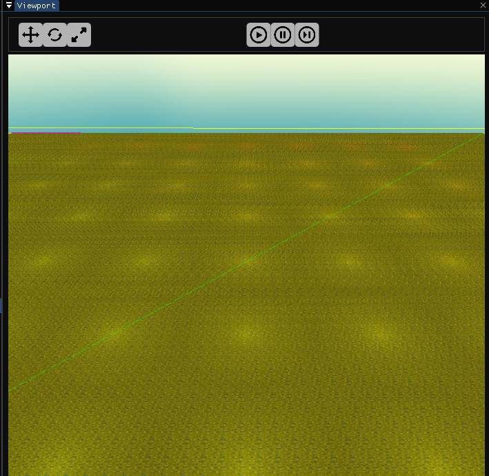
Allows you to see the scene through a free fly camera, you can control the camera throught these inputs:
you can also move the gizmos through it or select an object by clicking on it:
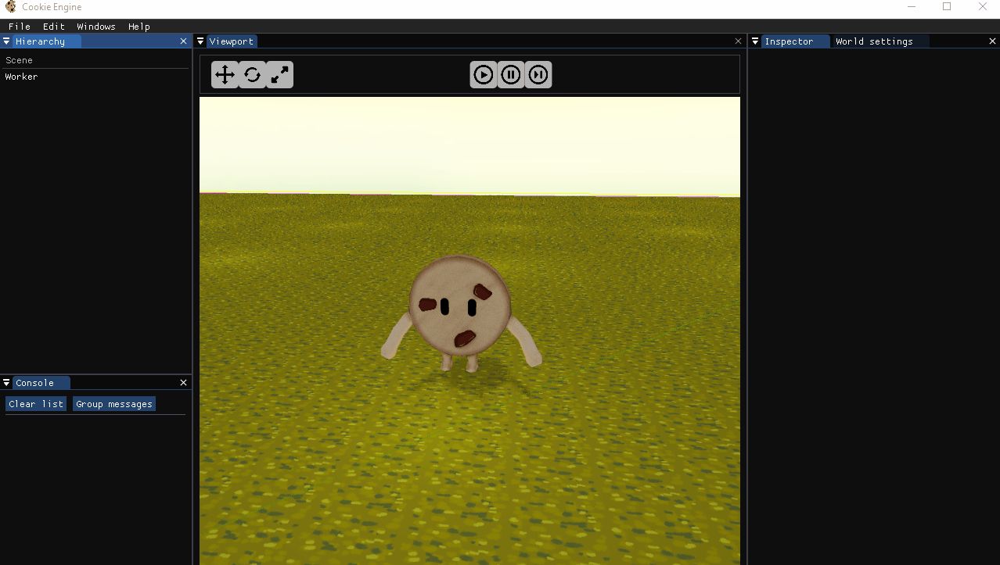
Allows you to see to play the game
Allows you to change the components of the entity selected, here are the components you can change
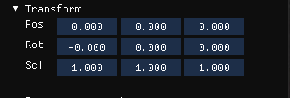
Allows you to change the translation, rotation and scale of an entity
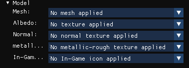
Allows to change the mesh, albedo texture, normal texture, material texture, and icon of the entity
/!\ when the mesh are imported they all have the same size of a cube between -0.5 and 0.5 /!\
/!\ the material map is the map containing the PBR information of the mesh. red is considered ambient occlusion, green roughness and blue metalness. /!\
/!\ icon represents the texture that will be shown in the ui of the game to represent the entity /!\
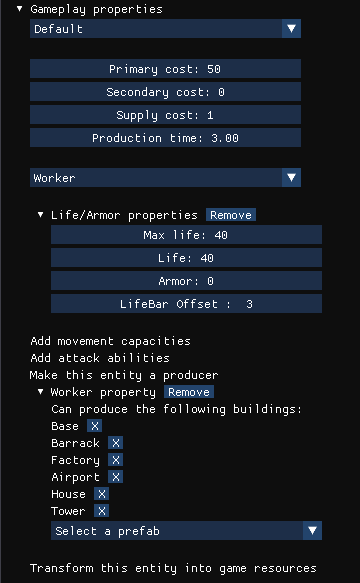
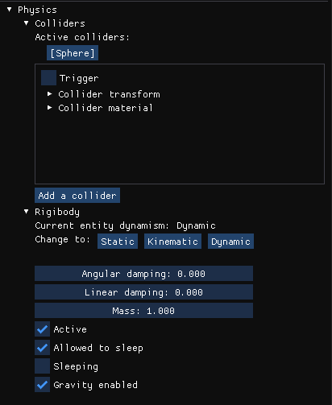
Allows you to add or remove colliders and change physics property of entity.
/!\ do mind, physics is not being used in the engine so changing it does not have any meaning /!\
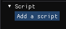
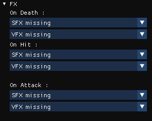
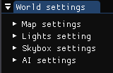
Allows you to change scene property, that are not of entities.
Here is a list of the property you can change:
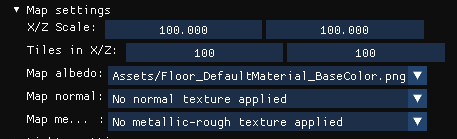
Allows you to change the textures, the size of the map and the number of tiles.
/!\ The map is a cube centered on 0,0,0 that cannot move /!
/!\ The textures that you apply is the textures of the tiles, they will repeat /!\
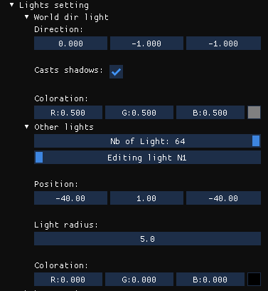
Allows you to change the property of the directional light, the number of point light, and the property of the point lights.
/!\ the number of point light can vary from 0 to 64 /!\
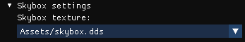
Allows to change the texture of the skybox.
/!\ The texture of the skybox must be a cubemap, format does not matter as long as it can be imported by the WIC Texture loader, otherwise it should be a dds /!\

Allows to change the Behavior of the selected Army which is not the player
Allows you to see the entity in the scene, focus on the entity by clicking on it, and create or delete entities:
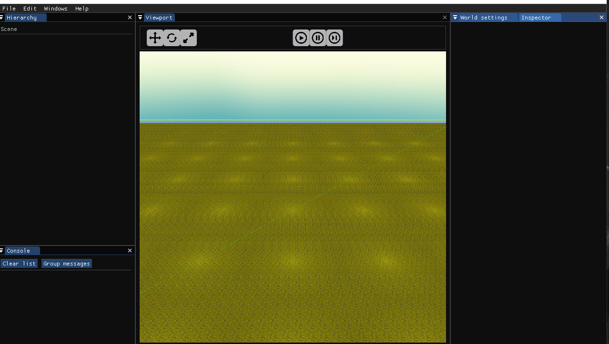
you may also create prefabs and save entities as prefabs
/!\ Prefabs are available in the Assets/Prefabs/ folder, be careful that this folder exists before saving prefabs as it might crash if you do not have it /!\
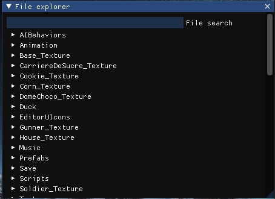
Allows you to see the content of your Assets folder, and to load save from file that have the .CAssets extension.
/!\ Be careful that your save are not corrupted, it may crash otherwise /!\
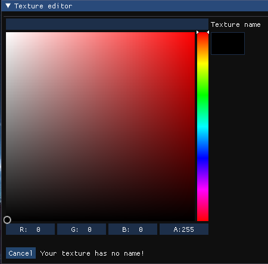
Allows you to create a texture from a color
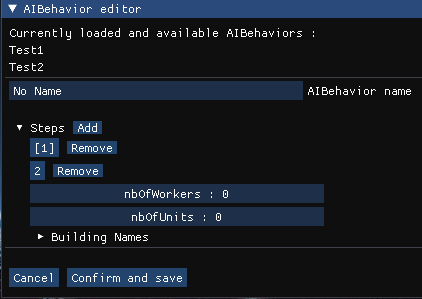
Allows you to edit the behavior of the enemy ai
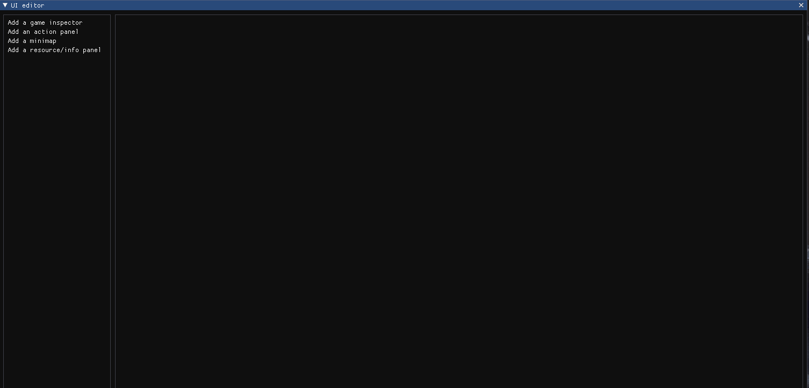
Allows you to place the widget of the ui in game where you want them to be. The modifications are saved and you will find them the same way when you relaunch Cookie Engine.
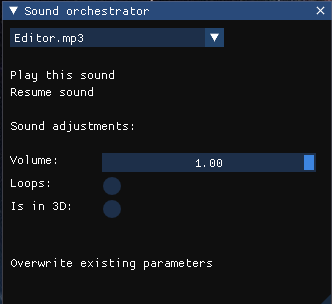
Allows you to manage the sound you have imported. You can choose between to have a 2DSound and a 3DSound and modify the volume of this sound.
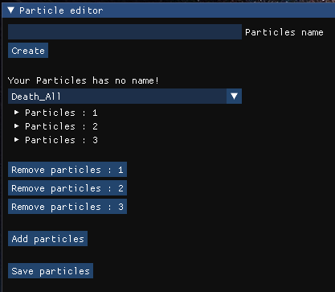
Allows you to create particle and save particles. You can add updators and generators and remove it to improve your particles system. A particles system can have several particles which may have different behaviors.
/!\ Particles are available in the Assets/VFX/ folder, be careful that this folder exists before saving particles as it might crash if you do not have it /!\
This will be it for the widget that you have at your disposal.
Now some information for the game:
Here is a link to the UML: https://drive.google.com/file/d/1AnRNGyOqXX3bZTfirHu1Dimqlu5DOhBt/view?usp=sharing
We only support mesh import via gltf of mesh in one piece.
We do not have parent-child transform system a it is irrelevant for an RTS game.
In the viewport, you can change the buffer that will be printed in it with F1 to F6 keys. here are the keys: